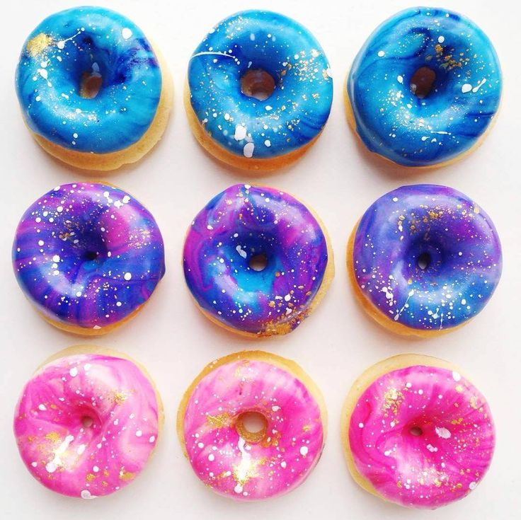

GALAXY DONUT
- In a bowl large enough to dip a doughnut into, whisk together the powdered sugar, milk, coconut oil and vanilla until smooth and silky.
Adjust the powdered sugar until the icing is a thick liquid consistency but not too drippy. Add 2 drops of purple food coloring and mix to tint the base.
Add 1 to 2 drops of each color and swirl the surface of the icing several times with a skewer or toothpick.
- Dip a doughnut on one side into the icing, letting the icing drip off for a moment before turning it over and placing it icing-side up on a wire rack set over a baking sheet.
Continue with the remaining doughnuts. As the food coloring drops become muddled, scoop out the top layer of icing and add new color combinations. You will probably get 2 dips out
of each swirl. Sprinkle the doughnuts with edible glitter and let dry.